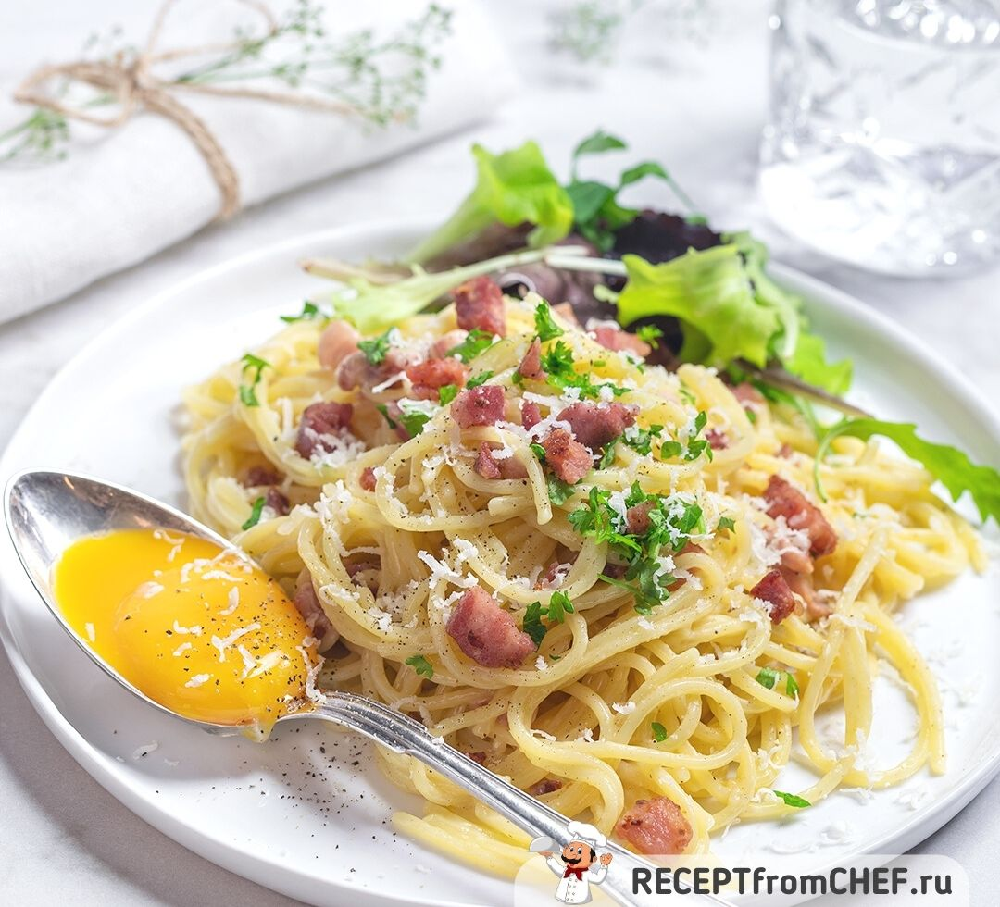

| КАЛОРИЙНОСТЬ | БЕЛКИ | ЖИРЫ | УГЛЕВОДЫ |
|---|---|---|---|
| 1158 | 46 | 61 | 102 |
| ККАЛ | ГРАММ | ГРАММ | ГРАММ |
ИНГРЕДИЕНТЫ
Вскипятите воду в большой кастрюле и сварите пасту до состояния аль денте. Обычно для этого нужно варить ее на минуту меньше, чем указано на пачке
Пока паста варится, растопите на сковороде масло и обжарьте на нем мелко нарезанные лук, чеснок и бекон. До мягкости и до отчетливого чесночного и жаренобеконного запаха.
Снимите сковороду с огня и в глубокой миске взбейте 22 яичных желтка со сливками и тертым пармезаном. Посолите и поперчите смесь, еще раз взбейте.
В готовые спагетти вывалите обжаренные с луком и чесноком кусочки бекона. Влейте смесь сливок, желтков и пармезана, перемешайте. И сразу подавайте, посыпав свеженатертым сыром и черным молотым перцем.
Eda.ru Ну и впихнул
я тег "br",
чтоб он был
использован